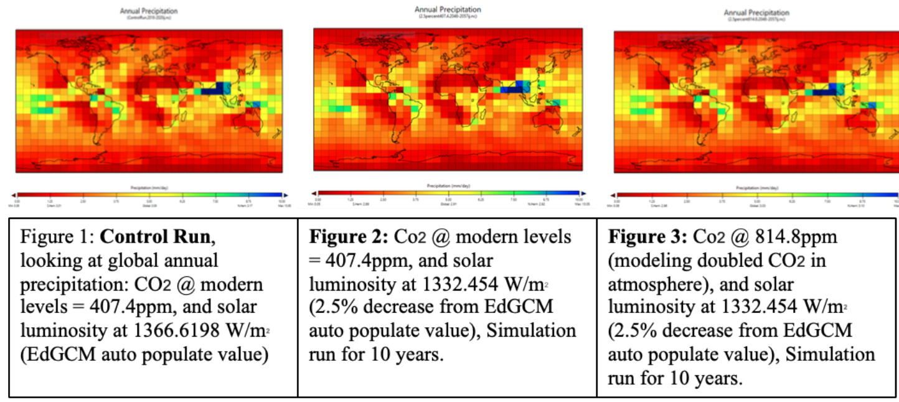
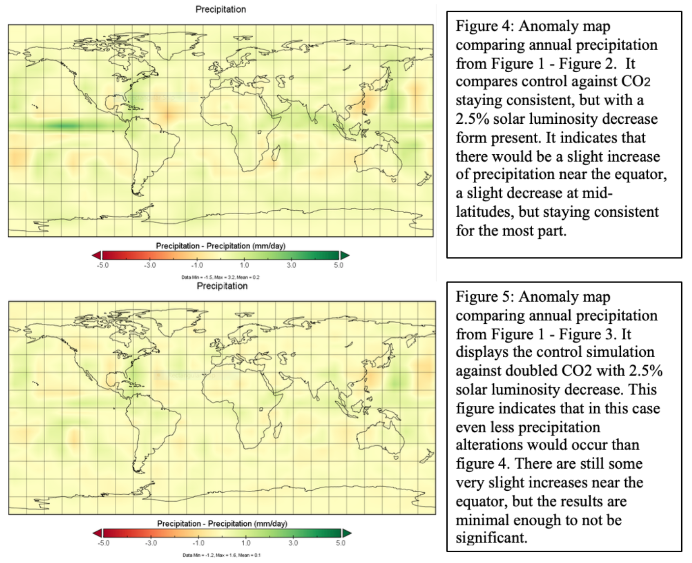
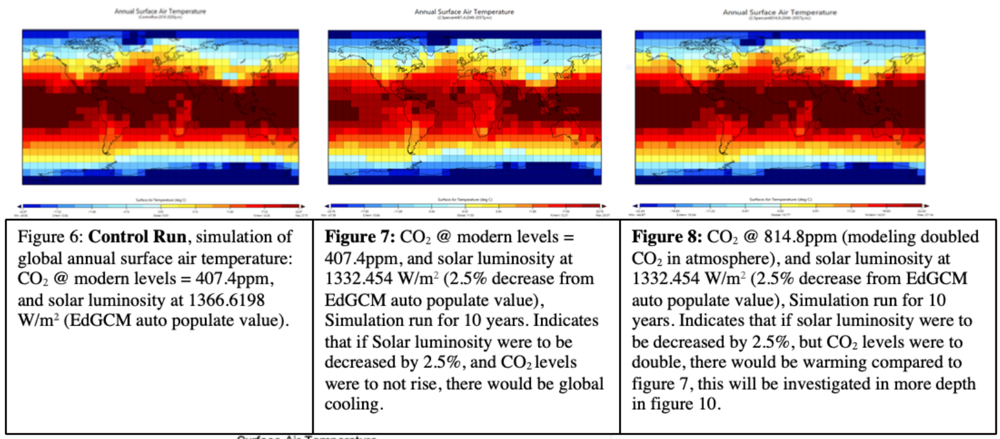
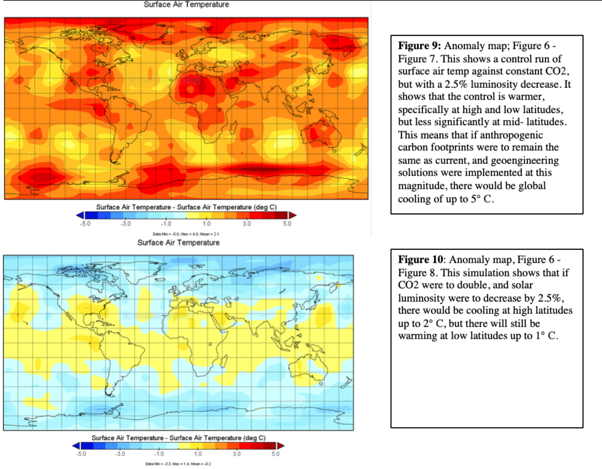
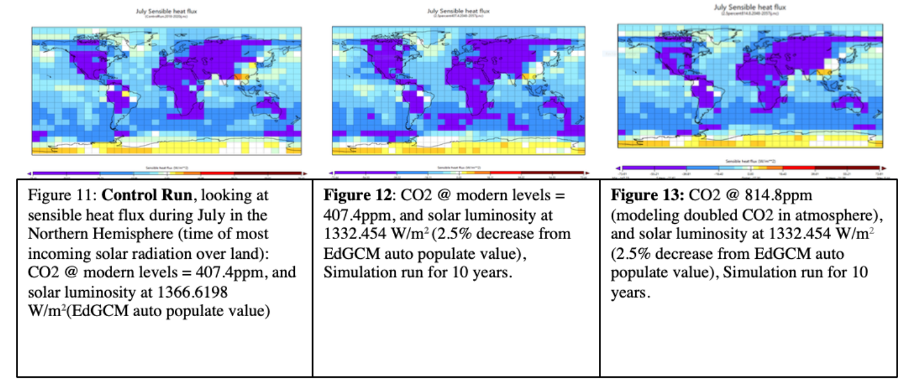
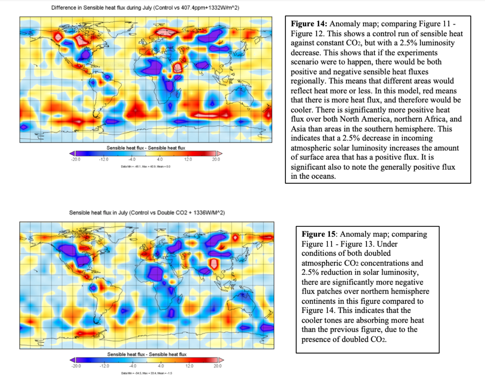

The Global Effects of Altered Solar Luminosity To Simulate Geoengineering Strategies
Ashley Cofrin and Tim Kaczanowski. Winter, 2019

These simulations investigate how a decrease in solar luminosity --geoengineered, or otherwise-- would effect global surface air temperatures, sensible heat flux, and precipitation.
Introduction
Geoengineering is a strategy to alter the climate at a large scale to manipulate global warming (R. Soc. 2009.). It can be done through solar radiation management or capture and sequestration. This study will focus specifically on solar radiation management. A leading idea within geoengineering solutions is to mock the cooling effects of volcanoes by emitting sulfuric acid particles into the upper atmosphere that would deflect solar radiation; this lower solar radiation would lead to a cooler planet. This solution is not designed to be used as the primary solution to climate change, but rather to lessen the urgency, and give the population time to adapt to lower carbon footprint lifestyles and technologies. Scientists are currently studying how to adjust to a doubling of CO2 scenario. Within this is considerations such as: how much sulfuric acid should be emitted (Battioni et al. 2019), where should it be emitted (Rasch, Philip J., et al., 2008), how big the particle sizes should be (Stenchikov et al. 1998) for optimal results and minimal concern for dangerous side effects. There are also more recent and less studied suggestions to use injections of calcite or limestone particles rather than sulfuric acid; the former would protect the ozone layer, while the ladder would deplete the ozone layer (Keith et al, 2016).
Geoengineering has known and unknown harmful effects (Robock et al. 2008). More sulfuric acid in the atmosphere would result in more acidic precipitation, this would therefore increase ocean acidity which in turn has effects on the global carbon cycle and the biological pump. It would also result in potential ozone depletion, rapid warming if the deployment stops, and the subjectivity to human error (Robock et al. 2008). Further, there are contradicting studies that argue geoengineering may not provide the desired results due to volcanoes causing warmer winters in the Northern Hemisphere due to enhanced zonal wind driven by the heating from the tropical stratosphere (Robock et al., 1992). At an oceanic level, changes below the surfaces of the ocean and ice sheets may strongly limit the potential of solar geoengineering to reduce the retreat of marine glacier (Keith et al., 2018).
Even if all effects geoengineering solutions were known, the politics of implementing the technologies is controversial and complex; particularly when considering that injections would have global implications but could theoretically be deployed by a single state, despite objections from other countries (Keith et al., 2019). Further, for a state to implement solar geoengineer strategies, there must be leaders that acknowledge climate changes does indeed exist. It is also important to factor in the costs of solar geoengineering solutions on governments.
Despite inconclusive science thus far, we will study the potential effects on earth's surface temperature if geoengineering solutions were utilized. To do this we will alter earth’s solar luminosity first by 1.5% (1346.12 W/m2), 1.75% (1342.70 W/m2), 2% (1339.287 W/m2), and 2.5% (1332.454 W/m2) of the current ‘modern predicted’ simulation. For clarity, we will only provide figures of the 2.5% reduction scenarios because they are the most significant; for the other simulations, the models will be run and data will be written, but the simulations images will not be provided. We chose these numbers based on opposing studies arguing how much solar diversion would be needed to stabilize earth’s climate in a hypothetical doubling of CO2; one argues 1.7% (Govindasamy et al, 2002), while the other argues 2.5% (Lunt et al, 2008). We are altering solar luminosity because EdGCM does not have the capacity to simulate added particles in the atmosphere; it will essentially only track the reduction of W/m2 of solar radiation, but will not account for changed zonal patterns, precipitation patterns, wind patterns, or warmer Northern winters. It also will not account for potential uneven distribution around the globe. We will focus specifically on July because this is a more significant time of year for ice sheets, which in effect drive major climate feedback loops; we will also evaluate mean annual temperature to understand a broader view as well. To understand the effects of lower luminosity, we will analyze many variables including: sensible heat flux, surface air temperature, and precipitation. The reason for our analyzing precipitation is rooted from some studies concluding that sulfuric injections would disrupt the Asian and African summer monsoons, reducing precipitation to the food supply for billions of people (Robock et al. 2008). There are similar studies showing effects on wind patterns that would be interesting to study ni later experiments, but that are not covered in this paper.
Keeping all factors in consideration, we hypothesize that a 2.5% decrease in solar luminosity (which represents injections of aerosols into the atmosphere) will produce similar surface temperatures to the control (present amounts of CO2, and present amounts of solar luminosity). We hypothesize that precipitation will also be affected to a point of significance but at a smaller scale. We expect different regions to respond to the CO2 and solar luminosity alterations.
Methods
The control run in Edgcm is a CO2 forcing of 407.4ppm, and a solar luminosity forcing of 1366.6198 W/m^2. This represents a model of our current atmospheric climate. All other variables in EdGCM were kept at their auto-populated values, and the model was run for 10 years. For this, we used the “modern predicted” model. The three variables we focused on when analyzing the output were; surface air temperature (deg C), sensible heat flux (W/m^2), and precipitation (mm/day). We ran experiments with because it's the standard variable that is seeked to manage with geoengineering; We ran experiments with sensible heat flux because it allows us to see if more heat energy is either being reflected off the surface back into space or if more of that heat energy is being absorbed by the land and oceans.
The next four EdGCM models were specifically concerning solar luminosity forcing effects on atmospheric conditions under current CO2 levels. We decreased the solar luminosity values in edgcm to 1.5% (1346.12 W/m2), 1.75% (1342.70 W/m2), 2% (1339.287 W/m2), and 2.5% (1332.454 W/m2). Each given their own simulation that was run for 10 years where CO2 was held at 407.4ppm and all other variables in EdGCM were left to auto populated values. The same 3 variables were analyzed as in the control run, allowing us to compare our results to the control both side by side and through anomaly maps created through Panoply.
To test our hypothesis we needed to run experiments changing the solar luminosity forcing under conditions mimicking a scenario of future doubled CO2. We ran four separate EdGCM simulations with a CO2 forcing of 814.8ppm (doubled from before) and changed the solar luminosity forcings values to 1346.12 W/m2, 1342.70 W/m2 1339.287 W/m2 and 1332.454 W/m2 respectively. All other variables in EdGCM were held constant and each simulation was run for 10 years. Again, the same 3 variables were analyzed as in the control run, allowing us to compare our results to both the control and to the simulations run under current CO2 levels.
In each variable being studied (precipitation, surface air temperature, and sensible heat flux) we ran anomaly simulations contrasting the control versus 2.5% luminosity decrease, with the original amount of CO2; then the control versus 2.5% luminosity decrease, with the doubled amount of CO2. Both the surface air temperature and sensible heat flux simulations are centered at 0. Red indicated on the legend for surface air temperature is different from sensible heat flux. Red, for surface air temperature, refers to an increase in temperature,whereas for sensible heat flux red refers to higher reflectivity of energy away from earth or a decrease in temperature.
In each of the simulations, the centers of the legend, and colorings of the simulation output were altered to communicate the message of the simulation more clearly.
Results
Figures 1 through 5 display the variables effects on precipitation. As expected, they all showed higher amounts of precipitation in lower latitudes. Figure 1 investigates current global annual precipitation. Simulations concerning precipitation on zero because very few places around the globe get zero rain annually and it's the only measurement looked at that cannot have a negative value. Figure 2 represents the effect a 2.5% reduction in incoming solar luminosity would have on annual precipitation, while keeping carbon dioxide at modern levels. Figure 3 looks at the effect a 2.5% reduction in solar luminosity would have under a doubled CO2 forcing. Figures 4 and 5 are significant because they compare the control simulations to altered simulations, which in turn are highlighting how things would change with alters CO2 and altered solar luminosity. Figure 4 compares control against CO2 staying consistent, but with a 2.5% solar luminosity decrease form present. It indicates that there would be a slight increase of precipitation near the equator, a slight decrease at mid-latitudes, but staying consistent for the most part. Figure 5 displays the control simulation against doubled CO2 with 2.5% solar luminosity decrease. This figure indicates that in this case even less precipital alterations would occur than figure 4. There is still some very slight increases near the equator, but the results are minimal enough to not be significant.


Figures 6 through 10 display the variables effects on surface air temperature. Figure 9 is an anomaly map comparing annual surface air temperature of our control run (figure 6) to the run where only incoming solar radiation was changed (figure 7). The simulation indicates that globally, surface air temperatures are higher under modern conditions than under a 2.5% reduction in solar luminosity. This supports our hypothesis that by increasing the number of aerosols in the atmosphere (modeled by decreasing solar luminosity) will help mitigate any increase in surface air temperature. Figure 10 compares the surface air temperature of the control (figure 6) to the run where carbon dioxide is doubled and solar luminosity is set to 1332.454 W/m^2 (figure 8). It indicates that modern conditions are warmer around the equator and cooler around the poles than what is shown in Figure 8. The hypothesized explanation for this is in the discussion section below. l enough to not be significant. When comparing Figure 6 and 7, notably lower surface annual temperatures over Africa in Figure 7. Surface temperature was leased varied between the two figures at high latitudes and over the oceans. In comparison, figure 8 visually looks almost identical to Figure 6 besides a few isolated squares. Possibly showing a correlation between the doubling of CO2 in the simulation and the seen decrease in surface temperature caused by the solar luminosity reduction in Figure 7.


Figures 11 through 15 display the variables effects on sensible heat flux. “Sensible” heat means it is created by either conduction or convection. Conduction refers to the transfer of heat through a solid, whereas convection simply refers to heat transfer through either liquid or gas. Heat flux (W/m2) is the rate of thermal energy flow per unit surface area of heat transfer surface. Positive sensible heat flux value indicates heat is being directed away from the surface into the atmosphere. The more negative the value, the more heat energy that is transferred to the surface. For figures 11 through 15, areas shown as yellow or red on the map indicate regions where less shortwave radiation is being absorbed by the earth than is being redirected back into space as longwave radiation during July in the Northern Hemisphere, indicating cooling. Comparing Figure 14 and 15 which are both anomaly maps simulating sensible heat flux during July in the Northern Hemisphere, there is significantly more heat energy being transferred into the earth system in Figure 15 compared to 14. Both North America and Asia in Figure 15 have larger patches of negative heat flux, while Figure 14 has visibly more positive heat flux patches over both the Southern Ocean and in the high Arctic.


Our findings show that as solar luminosity increases, surface air temperature and negative sensible heat decreased as expected. Precipitation shows slight variation, but very minimally as depicted by Figure 4 and 5. Figure 13 displays that if CO2 levels were to double, in conjunction with decreasing solar luminosity by 2.5%, that the sensible heat levels would be considerably lower than if solar luminosity where to stay consistent; it would be nearly the same as if there were no CO2 increases, or changes in solar luminosity. Figure 9 shows how a decrease in solar luminosity while holding carbon dioxide constant at modern levels, decreases annual surface temperature globally. While Figure 10, demonstrates how changing incoming solar luminosity under conditions of higher CO2 concentrations has less of an effect on surface temperature, most notably around the poles.
Discussion
Our findings are significant because they show that decreased solar luminosity is able to mitigate some of earth’s warming that is caused by carbon dioxide. If sulfuric acid were put into the atmosphere to reap albedo effects at a large enough quantity, it would be effective in regards to reducing solar luminosity. Our simulations show that this decrease in solar luminosity in conjunction with doubled CO2 keeps surface air cooler than without the decreased solar luminosity, due partially to higher amounts of negative heat flux, translating to a cooler climate.
It is important to note the regionality of the results. Although the decrease in solar luminosity is globally distributed (which is different than the actual implementation of aerosol injections), different regions of the globe are affected differently. Starting with surface air temperature: figure 10 shows that in the situation that geoengineering were implemented, and CO2 were doubles, the tropics would still experience warming, in contrast to the poles. This would result in humans, animals, and plants all still having to adapt to a warming climate. This is significant given that historically the global north has been more privileged than the global south. This means that the global south would likely not have the same resources to adapt to the warmer climate. This may not be true in the realistic injections of aerosols given that the injections would most likely take place in the tropics, but it remains significant to consider. In regard to sensible heat flux: figure 15 (a doubles CO2 and 2.5% luminosity decrease scenario) show spots of more absorbed heat in Africa, North America, and northern Asia. This trend balances out the surface air temperature trend, but poses new challenges as these are spots that contain permafrost, high amounts of agriculture, and once again (although less) vulnerable populations. In regards to precipitation, the alterations are so low in our simulations that there is no significance in regionality. There has been talk among the scientific community about precipitation changes as discussed in the introduction, but EdGCM’s do not support those arguments. EdGCM however is a relatively simplistic model.
Of the many potentially negative side effects to this solution as discussed in the introduction, our results were only able to capture precipitation changes, in which showed minimal changes. These changes may be more significant with actual aerosols due to regionality rather than equally dispersed global effects. Our tests do not encompass regionality. Regionality would be significant in the actual execution because the aerosols would be injected at the tropics, and wind patterns would disperse the aerosols. This may lead to unequal dispersal of ocean acidity and precipitation acidity. There are also models being run to understand how regional climates would be affected if they were dispersed from the tropics such as strength of monoonal seasons, or the hypothesized reduced precipitation, soil moisture, and river flow (Trenberth 2007). Our simulations also do not account for the ozone depletion in result from adding acid to the atmosphere, which in turn would increase ultraviolet rays coming to earth. Our study also does not show the effects of injections were to halt, and rapid warming were to occur, along with the other effects of this rapid warming (Wigley 2007).
It is also significant to look at figure 8 to see that if CO2 was doubled, and solar luminosity was decreased by 2.5%, that low latitudes would still have warming effects. This indicates that even if we did use geoengineering solutions, there would still need to be changes in human actions to avoid CO2 increases, because it will still increase surface air temperatures. This puts even more importance on the reduction of CO2 outputs. The figure does also show cooling around the poles. This could arguably more important due to factors of ice sheet growth and the feedback loops that are correlated with ice and the climate at large. The hypothesized reason for the trends shown in figure 8 is from the poles are warming faster than lower latitudes, mainly due to changes in albedo and in large weather systems (Ecochard, 2011). The increase in CO2 amplifies the negative feedback loops between the: atmosphere, ice and the ocean experienced at the poles.
Our hypothesis that a 2.5% decrease in solar luminosity (which represents injections of aerosols into the atmosphere) will produce similar surface temperatures to the control (present amounts of CO2, and present amounts of solar luminosity). Is accurate in that there was partial global cooling and neutralizing under both conditions. As discussed, this is not true from region to region, and may be inaccurate given our current resources. The second part, hypothesizing that: precipitation will also be affected to a point of significance but at a smaller scale, was inaccurate. The precipitation levels were not affected to a point of significance; although as discussed earlier, this may be untrue in actual implementation or more in-depth simulations.
There is a large amount of future studies to be done concerning solar geoengineering, its effectivity, and all of its outcomes (positive and negative). Specifically, there should be a larger focus on the social impacts and complexes within the solution. In the introduction, we presented some literature that discusses these dynamics, but they are not very prevalent. It will be important to incorporate the social sciences into the physical sciences continuously as geoengineering becomes more studied and plausible. This radical idea is yet another that is subject to leaving vulnerable populations without the same privileges as others. Further research into negative externalities created by solar geoengineering is necessary to properly weigh both the positives and negatives associated with altering our atmosphere to try and combat anthropogenically created greenhouse gas emissions.
Once again, geoengineering solutions are not designed to be the main solution to climate change, but rather a mitigation method as humans learn to decrease their carbon outputs.
Bib
Battioni, Sandro, Debra Weisenstein, David Keith, Aryeh Feinberg, Thomas Peter, and Andrea Stenke. “Exploring accumulation-mode H2SO4 versus SO2 stratospheric sulfate geoengineering in a sectional aerosol–chemistry–climate model.” Atmospheric Chemistry and Physics 19 (2019).
Burns, Lizzie, David Keith, Peter Irvine, and Joshua Horton. “Belfer Technology Factsheet Series: Solar Geoengineering” (2019)
Caldeira, K., and L. Wood (2008), Global and Arctic climate engineering: Numerical model studies, Philos. Trans. R. Soc., Ser. A, 366, 4039 – 4056, doi:10.1098/rsta.2008.0132.
Ecochard, Kristyn. “What’s causing the poles to warm faster than the rest of Earth?” NASA. 6 April, 2011, https://www.nasa.gov/topics/earth/features/warmingpoles.html
Govindasamy, Bala, and Ken Caldeira. “Geoengineering Earth's Radiation Balance to Mitigate CO2-Induced Climate Change.” Geophysical Research Letters, vol. 27, no. 14, 2000, pp. 2141–2144., doi:10.1029/1999gl006086.
Govindasamy, B., Thompson, S., Duffy, P., Caldeira, K. & Delire, C. 2002 Impact of geoengineering schemes on the terrestrial biosphere. Geophys. Res. Lett. 29, 2061. (doi:10. 1029/2002GL015911)
Keith, David W., et al. “Stratospheric Solar Geoengineering without Ozone Loss.” PNAS, National Academy of Sciences, 27 Dec. 2016, www.pnas.org/content/113/52/14910.short.
David W. Keith, Peter J. Irvine, and John Moore. 7/27/2018. “Brief communication: Understanding solar geoengineering's potential to limit sea level rise requires attention from cryosphere experts.” The Cryosphere, 12, Pp. 2501-2513.
David Keith and Joshua Horton. 4/23/2019. “Multilateral parametric climate risk insurance: a tool to facilitate agreement about deployment of solar geoengineering?” Climate Policy.
Lunt DJ, Ridgwell A, Valdes PJ & Seale A (2008). Sunshade World: a fully coupled GCM evaluation of the climatic impacts of geoengineering. Geophysical Research Letters 35, L12710.
Parker, A., & Keith, D. W. (2015). What’s the right temperature for the Earth? The Washington Post. 29 January 2015. Retrieved from https://www.washingtonpost.com/opinions/whats-the-right-temperature-for-the-earth/2015/01/29/b2dda53a-7c05-11e4-84d4-7c896b90abdc_story.html?utm_term=.4a43136476e6, Accessed 06 March 2018.
R. Soc. 2009. Geoengineering the Climate: Science, Governance and Uncertainty. RS policy doc. 10/09, R. Soc., London.
Rasch, Philip J., et al, “Exploring the Geoengineering of Climate Using Stratospheric Sulfate Aerosols: The Role of Particle Size.” Geophysical Research Letters, vol. 35, no. 2, 2008, doi:10.1029/2007gl032179.
Robock, Alan, et al. “20 Reasons Why Geoengineering May Be a Bad Idea.” Bulletin of the Atomic Scientists, vol. 64, no. 2, 2008, pp. 14–59., doi:10.1080/00963402.2008.11461140.
Robock, Alan, et al. “Regional Climate Responses to Geoengineering with Tropical and Arctic SO2 Injections.” AGU Journals, John Wiley & Sons, Ltd, 16 Aug. 2008, agupubs.onlinelibrary.wiley.com/doi/full/10.1029/2008JD010050.
Robock, Alan, and Jianping Mao. “Winter Warming from Large Volcanic Eruptions.” Geophysical Research Letters, vol. 19, no. 24, 1992, pp. 2405–2408., doi:10.1029/92gl02627.
Stenchikov, G. L., I. Kirchner, A. Robock, H. F. Graf, J. C. Antuna, R. G. Grainger, A. Lambert, and L. Thomason (1998), Radiative forcing from the 1991 Mount Pinatubo volcanic eruption conditions, J. Geophys. Res., 103, 13,837–13,857
Trenberth, Kevin E. and Aiguo Dai, "Effects of Mount Pinatubo Volcanic Eruption on the Hydrological Cycle as an Analog of Geoengineering," Geophysical Research Letters, vol. 34. no. 16, (2007).
Wigley, "A Combined Mitigation/Geoengineering Approach to Climate Stabilization," pp. 452-54. and Figure 3 in H. Damon Matthews and Ken Caldeira, "Transient ClimateCarbon Simulations of Planetary Geoengineering," Proceedings of the National Academy of Sciences, vol. 104, pp. 9.949-54 (2007)